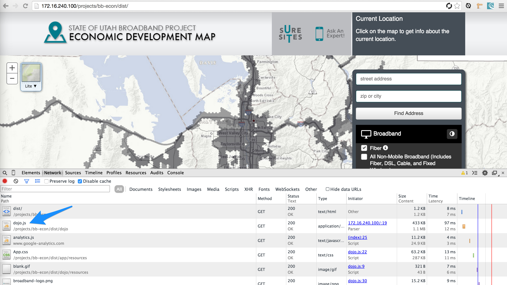
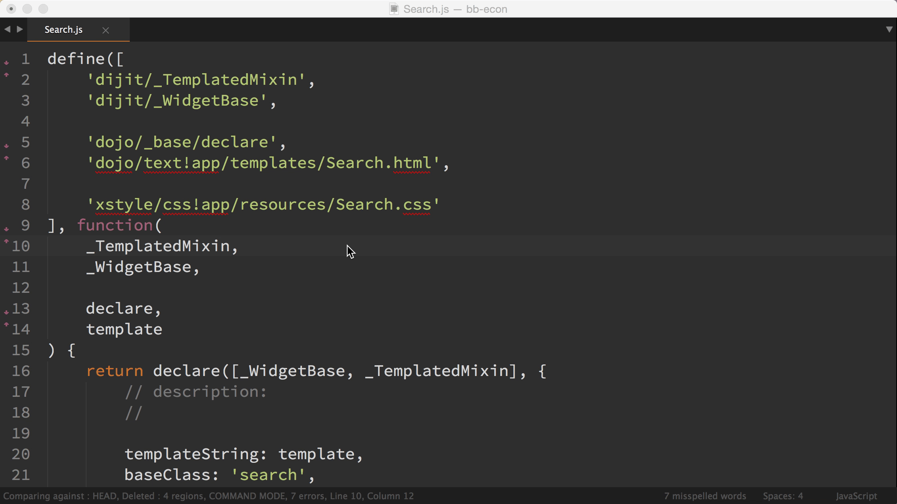

A Few of Our Favorite Things
node
npm, bower, grunt
grunt-esri-slurp
grunt-arcgis-press
sublime and package control
AMD Butler
Travis CI
let's lay a foundation
node.js
npm
is usually installed with node.js
npm is a package manager
bower
front-end package manager
installed via npm
esri js api
is a font-end package
bower install esri.jsapi
not yet
grunt-esri-slurp
is the next best thing
npm install grunt-esri-slurp
dojo build system
allows you to create the single file app

esri js api
+ the build system
=

two problems
#1
hosted on a CDN
you get modules you don't use
but you can download the js api
#2
it is already built
esrislurp handles these issues
AMD Butler
allows you to stay in the zone
need to add a new amd module
stop
scroll to the top
remember the path to the module
scroll some more
remember the modules order
add a variable name
forget what you were doing

add, remove, sort amd modules
built for sublime text
grunt-arcgis-press
grunt, npm, and bower bootstrap our front-end and back-end dependencies
git clone && npm install && bower install && grunt
but what about that map service...
oh it is documented in the readme
that is not good enough
automate the entire process
the ultimate goal
low friction
continuous integration
continuous deployment
horizontal scaling
different environments, dev, test, stage
upgrading